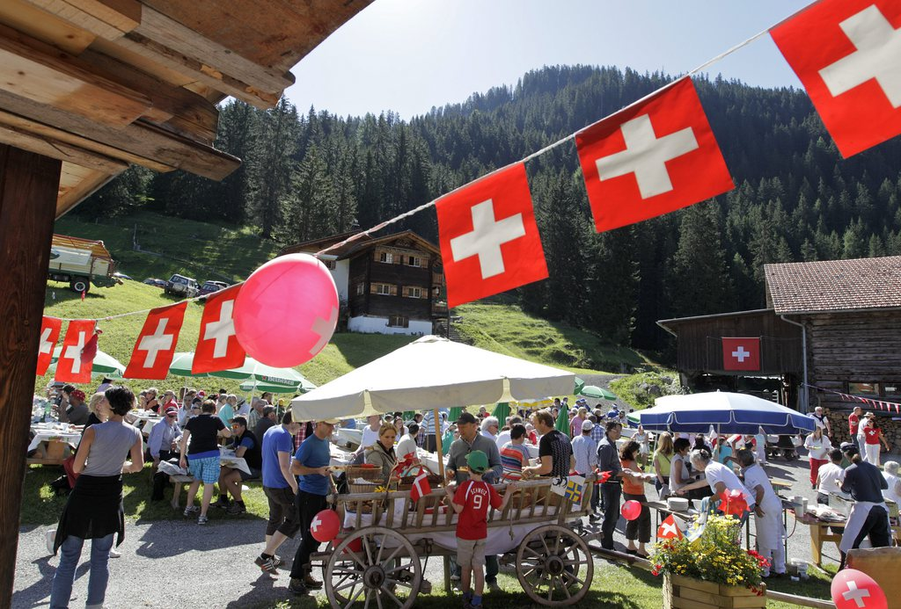
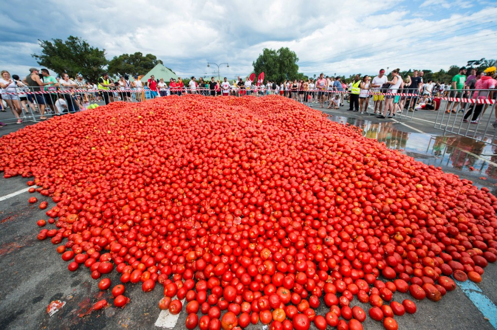

1291 Fundación de la Confederación Helvética Desde 1891, en Suiza el 1 de agosto se celebra la Fiesta Nacional. La fecha se origina de uno de los primeros contratos con el que los tres cantones Uri, Schwyz y Unterwalden formaron el núcleo de la Suiza actual, que se ha ido configurando en el transcurso de cinco siglos.

Esta celebración ha adquirido una forma especial en el Salto del Rin junto a Schaffhausen. Desde la mitad del siglo XIX las cataratas suelen estar iluminadas en ocasiones especiales y desde 1920 también el 1 de agosto; es más, desde 1966 sólo en esta fecha. También se disparan fuegos artificiales con un gran poder de atracción.
17mo Festival del Tomate en Jayuya abril 27, 2020. El Complejo Filiberto García de nuestro municipio, será cede de la Décima Séptima Edición del Festival del Tomate, El Gran Mojo de tomates y bacalao y el Reinado del Tomate. Habrá actividades para niños, música en vivo, artesanías, exhibición de animales, competencias de platos y muchas sorpresas.

Jayuya-Un colorido espectáculo agrícola y artesanal enmarcó la celebración del Festival del Tomate en Jayuya, un evento cuyo interés principal es recuperar el sitial que tuvo una vez este pueblo de la cordillera central como principal zona de producción de este fruto en la Isla.
Miles de personas viajaron desde pueblos distantes para apreciar las exhibiciones que engalanaban las inmediaciones del complejo deportivo Filiberto García, lugar donde se celebró la decimocuarta edición del festival cultural.
El cultivo del tomate- un fruto blando de pulpa acuosa- se desarrolló a grandes escalas en Jayuya a mitad del siglo pasado, según explicó el productor del evento Jesús Arce. De ahí, que conozcan al municipio como “La ciudad del tomate”.
“Lo que queremos con este festival es precisamente recordar que tuvimos una gran producción de tomate y un poco también exponer a los nuevos agricultores que están evolucionando y tratando de rescatar esta siembra. De hecho, aquí en Jayuya hay muchas siembras de tomate, al extremo de que los pueblos del centro de Puerto Rico consumen el de aquí”, agregó Arce.
Lucia Rosales
¿Alguien sabe donde se lleva a cabo La noche de San Juan? He estado investigando pero no he encontrado absolutamente nada.
Responder
Itziar Ortega
En puerto rico...La noche del 23 al 24 de junio, los puertorriqueños se acercan hasta las playas del archipiélago para festejar el solsticio de verano y el día del patrón de Puerto Rico.
Responder
Lucia Rosales
Muchas gracias. Tendre contemplado asistir este mismo año al festejo.
Responder